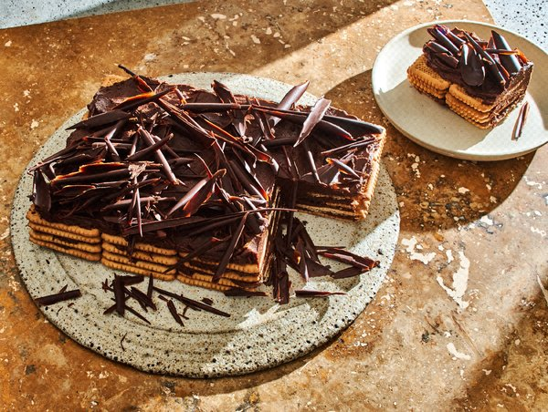

Home
Moka Dupont: A French Icebox Cake

Description
When my Paris friend, Bernard Collet, told me about this cake, a favorite for over 60 years in his family, I
was
expecting something tall, soft, frosted and fit for candles. I expected a gâteau but got an icebox cake:
four layers of
cookies held together with four layers of frosting. The cake, originally a back-of-the-box recipe, was
created for a
French tea biscuit called Thé Brun, but I could never find them, so I used Petit Beurre cookies. Lately I
can’t find
them either, so I use old-fashioned Nabisco Social Teas. You can use whatever cookies you’d like, but they
should be
plain, flat, square or rectangular. Depending on the size of your cookies, you might need fewer of them;
depending on
how big or small you make the cake, you might need to juggle the number of layers or the amount of frosting.
It’s a
recipe made for improvisation.
INGREDIENTS
- 1/2 cup/115 grams unsalted butter (1 stick), at room temperature
- 1/2 cup/100 grams plus 1 tablespoon granulated sugar
- 1 lage, very fresh egg (preferably organic, since it will not be cooked)
- 3 ounces/85 grams bittersweet chocolate, melted and cooled
- 1/2 cup/120 milliliters hot espresso (made fresh or with instant espresso powder
- 64 Nabisco Social Tea Biscuits (from 1 12-ounce package), or other plain, preferably flat cookies
- Grated chocolate, for decoration
PREPARATION
- Before you start assembling the cake, decide on the size you want. I make a cake that’s 4 cookies wide,
4 cookies long
and 4 layers high. Choose a plate to build and serve the cake.
- Make the buttercream frosting: Put the butter in a small bowl, and beat it with a flexible spatula until
smooth. Add 1/2
cup sugar, and beat again with the spatula until it’s thoroughly incorporated. Separate the egg, putting
the yolk in a
cup and the white in a small bowl. Whip the white until it holds soft peaks using a mixer or, for a
short but strenuous
exercise, a whisk. Give the yolk a quick whisk, just to break it up, then stir it into the white.
- Add the egg to the bowl with the butter, and using the spatula, stir and fold until blended. Scrape in
the melted
chocolate, then stir and fold again until the frosting is homogeneous. (It won’t be perfectly smooth.)
Taste the
buttercream, and you’ll feel grains of sugar on your tongue — that’s the way it’s meant to be.
- Pour the hot espresso into a wide, shallow bowl, and stir in the remaining 1 tablespoon sugar.
- One by one, drop each cookie into the espresso, count 3 seconds, flip it over, count 3 seconds more,
then place the
espresso-soaked cookie on the serving plate. Continue until you have your first layer of cookies in
place.
- Using a small offset spatula or a table knife, spread a quarter of the buttercream over the cookies,
working the cream
to the edges of the cookies. Build 3 more layers of dunked cookies and smoothed buttercream. Top the
last layer of
buttercream with grated chocolate.
- Refrigerate the cake until the frosting is set, at least 3 hours. The cake can be kept covered in the
refrigerator for
up to 3 days. (Once the frosting is set, the cake could also be wrapped airtight and frozen for up to 2
months. To
serve, simply let it defrost, still wrapped, in the refrigerator for about 4 hours or at room
temperature for about 1
hour.)